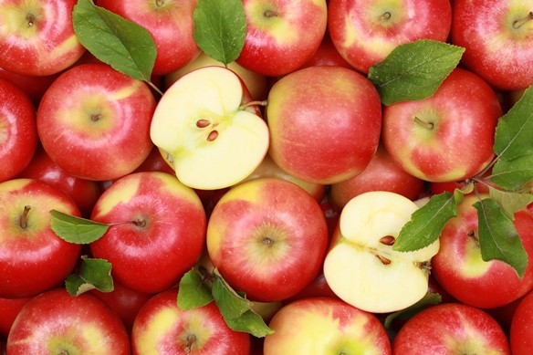

Az alma vagy almafa (Malus) a rózsafélék (Rosaceae) családjába tartozó növénynemzetség.
Körülbelül 55 faj tartozik ide, melyek többsége Ázsiában, kisebb része Európában és Észak-Amerikában honos. A nemzetségbe tartozó egyedek, vagyis az almafák termésének a neve is alma.

Az almák ritkán tövises, lombhullató kis fák vagy cserjék. Leveleik egyszerűek, karéjosak, néha hasadtak. Virágzata csomó, bogernyő vagy sátorozó fürt.
Virágaik fehér, rózsaszín vagy piros színűek. Párta 5, csésze 5 van, porzóinak száma 15, 20 vagy 50, a 2-5 bibeszál alul összenőtt.
Az almafa termése botanikailag csoportos tüszőtermés, alma áltermés (pomum): gömbölyded alakú, két végén bemélyedés található.
A felső mélyedésből ered a rövid kocsány, ezzel csüng a fán. A másik mélyedésben az öt apró, elszáradt csészelevél. Az alma viaszos héja a gyümölcshúst veszi körül.
Ezen belül öt hártyás rekeszben ülnek a magvak.
Termése világszerte közkedvelt gyümölcs, frissen fogyasztható. Nyersen, kockákra vágva ideális salátákba, főzve gyümölcslevesekhez, kompótnak, de téli tárolásra befőttnek, lekvárnak is alkalmas.
Használható szószok készítéséhez és süteményekben is ízletes. Jellegzetes sütemény az almáspite, aminek a töltelékét fahéjjal fűszerezett almareszelék adja. Pépesítve, akár több más gyümölccsel kombinálva kiváló bébiétel.
Kipréselt leve a legtöbb gyümölcslé egyik legfőbb alkotóeleme, kissé fanyar, savanykás ízével ezekben mind dominál.
Alkalmas gyümölcsbor és pálinka készítésére is. Vékony, lapos szeletekre vágva, majd kiszárítva almachips (aszalvány) készíthető belőle, ami még szárazon is savanykás.
Az almában előforduló antioxidánsok a sejteket károsító folyamatok semlegesítésével hatnak jótékonyan egészségünkre, ezáltal erősítik az immunrendszert, gyulladáscsökkentő és rákmegelőző hatással rendelkeznek.
A hasznos vegyületek (flavonoidok, quercetin glycosid, a phloretin glycosid, a chlorogénsav és az epicatechin) legnagyobb számban az alma héjában vannak jelen, így ajánlott hámozás nélkül fogyasztani a gyümölcsöt.
Holland és skót orvosok által végzett kutatási eredmény szerint terhesség alatt a rendszeres almafogyasztás csökkenti a gyermekben az asztma kialakulásának kockázatát. A tanulmányban több mint 1200 gyermeket figyeltek meg.
A flavonoidok emellett erősítik az immunrendszert, rákmegelőző, gyulladáscsökkentő tulajdonsággal bírnak, segítenek a vírusok és baktériumok leküzdésében, májvédő szerepet is betöltenek.
Összességében védik az egészségünket.
Források:
Webbeteg